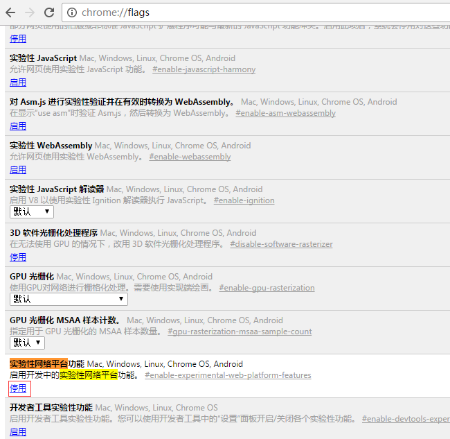
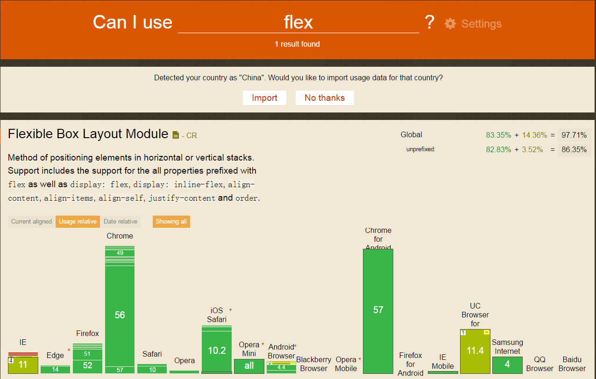

CSS Grid Layout
网格布局就是使用网格概念来布局内容的方法，为作者提供一种机制，使用一组可预测的大小将可用空间分配为列和行。
-
浏览器支持情况
-
目前很多主流浏览器都还不支持grid网格布局，在 https://caniuse.com/#search=grid 查看支持情况：

-
以chrome浏览器为例介绍手动启用的方法。（还有部分浏览器也可以手动启用）
 点击启用“实验性网络平台功能”，重启浏览器后生效
-
-
用grid实现布局
-
实现效果：
-
实现说明：
-
可以为 font 按顺序设置如下属性：
font-style font-variant font-weight font-size/line-height font-family -
可在父元素上设置的属性
grid-template-columns: auto; // 每列的宽度自适应，均分可用宽度
grid-template-rows: auto; // 每列的高度自适应，均分可用高度
grid-template-areas:
"header header header header" // 网格的第一行
"navigation content contentSide sidebar" // 网格的第二行
"footer footer footer footer"; // 网格的第三行 -
可在父元素上设置的属性
grid-row-start: 2;
grid-row-end: 3;
grid-column-start: 1;
grid-column-end: 2; // 网格线的编号，绘制网格
grid-area: header; // 网格命名 -
备注
1fr : 剩余的空间，是多个网格就按照某种比例来分配剩余的空间
grid-template-areas: 每一行的列数不一致时，布局会异常 -
在线构造布局，实时生成css
http://griddy.io/
-
-
-
flex 布局
从上图可以清晰看到，绝大多数浏览器对flex属性具有良好的兼容性，在很多情况下可以很方便的对元素进行布局。但是，在对网页进行整体布局时它并不是最佳的选择，一般是使用浮动或者内联元素实现，这并不是创造浮动和内联元素的初衷。目前，我们为了实现整体布局，不得不使用这些hack。网格布局的诞生，我们可以用它的一些基础属性来实现一些标准布局。